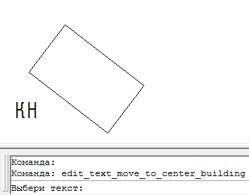

Команда:edit_text_move_to_center_building
Команда:edit_text_move_to_center_buildingУказываем текст и три точки по углам здания
Вызов программы:
Команда:edit_text_move_to_center_building
 Выбери текст:
Выбери текст:
 Указывает объект типа текст
Указывает объект типа текст
Укажи первую точку:
Указывает точку на первом угле здания
Укажи вторую точку:
Указывает точку на втором угле здания
Укажи третью точку:
Указывает точку на трутьем угле здания
Надпись перемещается в центр здания, ориентированная по длинной стене. Стиль текста не меняется, если контур здания мал и не позволяет выполнить надпись соответствующей высотой шрифта - высота шрифта будет уменьшена в плоть до минимально допустимой по УЗ (Для шрифтов не указанных в УЗ максимальная высота букв 3.0мм минимальная 1.6мм в плане). Если же даже в минимальном размере надпись все равно не помещается от об этом будет сообщено пользователю:
Подпись не входит в контур, попробуй разместить рядом.
Центром здания принимается центральная точка прямоугольника построеного по трем указанным точкам.
Пример работы кнопки
